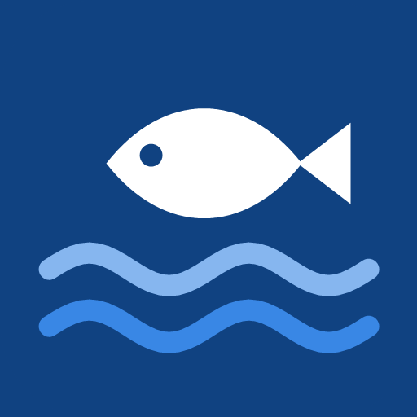

Print this and pin it up at tackle shops, boat ramps, jetties and club noticeboards (ask first!).
🖨 Print / save as PDF

CastCall
Australia's free fishing forecast
🏆
Where to fish right now
110+ spots ranked every hour – salt and fresh, every state
⏰
The best time to go
Bite windows for the next 2 weeks
🌊
Tides, wind, swell & water temp
Live for every spot
🎣
What's biting & what bait to use
Baits, lures and rigs for 33 fish
📌
Pin your own secret spot
Get a full rundown for exactly where you fish
Scan me 📱
Free · No sign-up · Works on any phone or computer